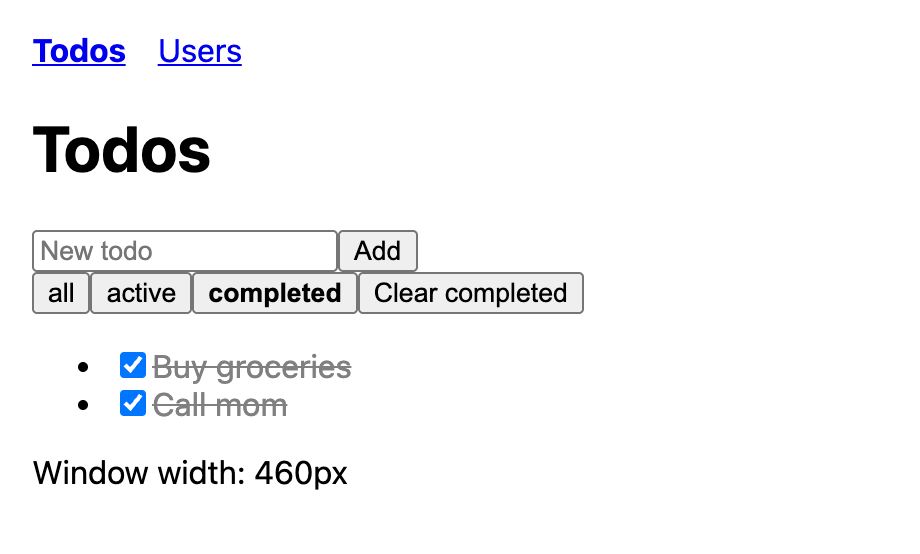
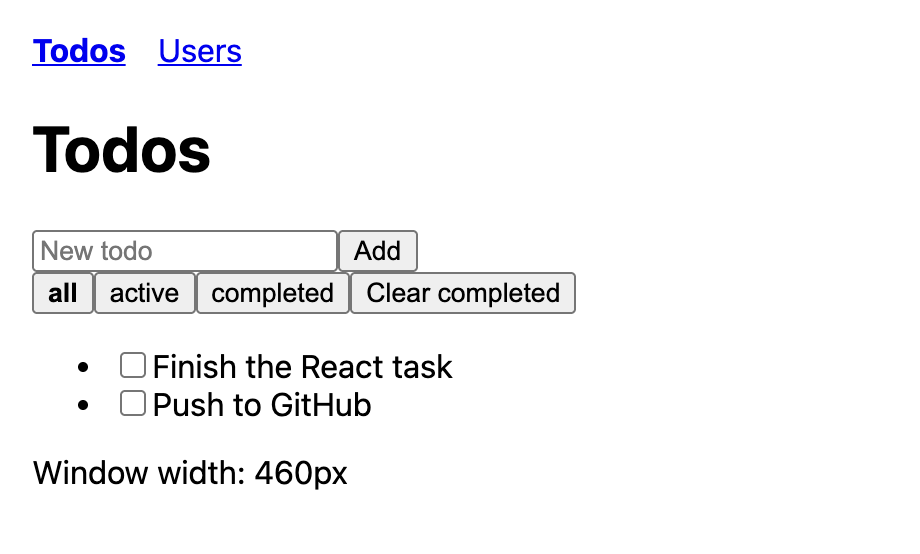
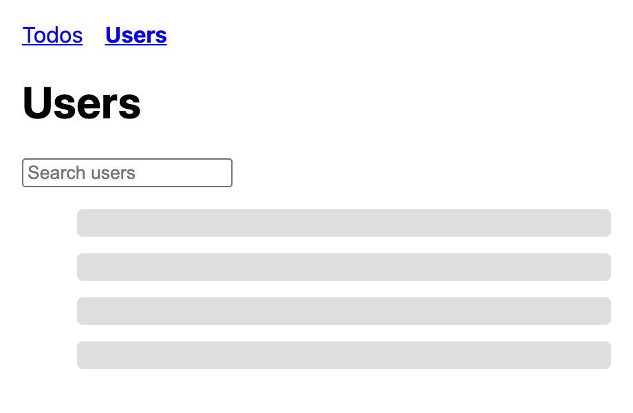
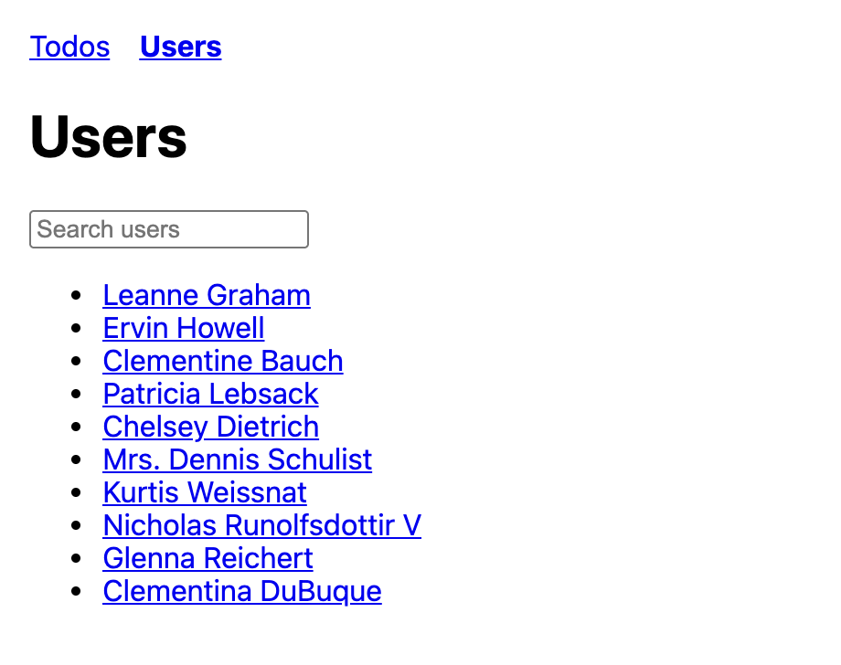
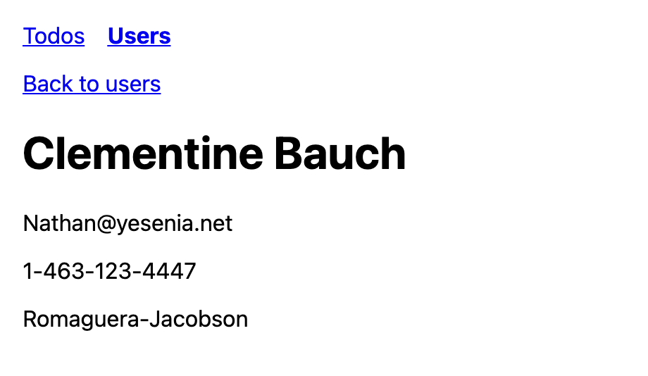
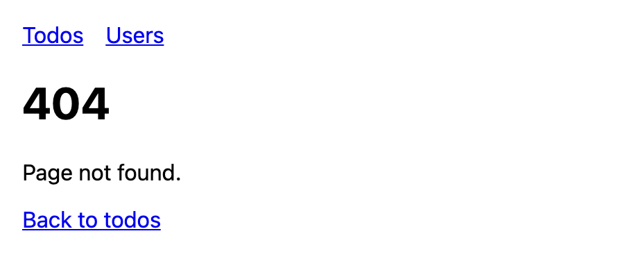

Chea Panharith
__REPO_LINK__






WindowWidth (resize listener): the cleanup takes the listener off the window, so after I leave /todos it isn't still calling setWidth on a component that's gone, and I don't pile up an extra listener every time I come back.UserDirectory (fetch when the search changes): the cleanup sets cancelled to true, so if I type a new search while an older request is still loading, the old response is ignored and can't overwrite the newer results.UserDetail (fetch when the id changes): same idea for the id in the URL, so if I jump from /users/1 to /users/2 quickly, the late answer for user 1 can't replace user 2's page.